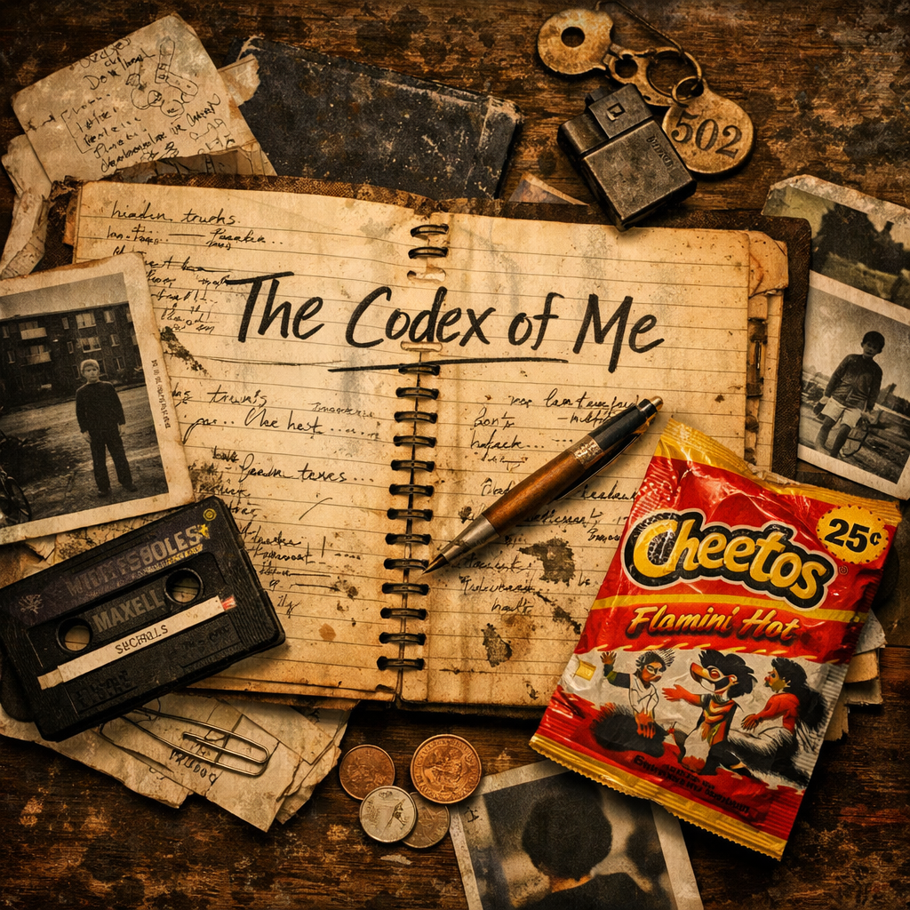

The Lore Panel
Music / Albums
The Codex of Me
A ritual interface where lore, codex, and lyric archive move as one living scroll.

The Interactive Codex
Track Scroll
Select a chapter to turn the page.
The Lyric Archive
Music / Albums
A ritual interface where lore, codex, and lyric archive move as one living scroll.

The Lore Panel
The Interactive Codex
Select a chapter to turn the page.
The Lyric Archive